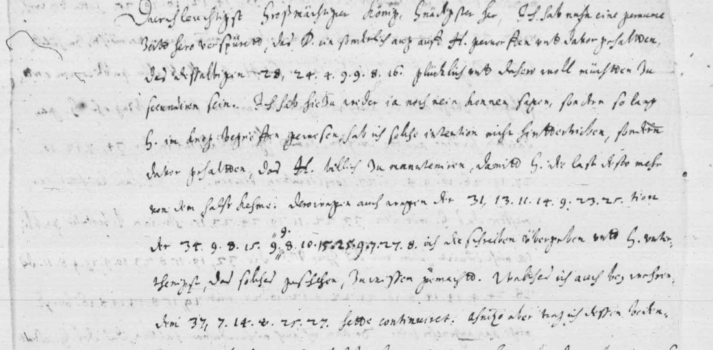

At a glanceCiphertext-only break · partial (79% of the cipher)
- The letter
- Johan Zobel, Danish resident in Paris, to Christian IV: a two-page German report of 20 September 1629, with 19 words replaced by runs of numbers. Persons and states appear as single capital letters in the clear (D., H., G., B., Bp., Bo.).
- Where
- Copenhagen, Rigsarkivet, Tyske Kancelli, Udenrigske Afdeling, Frankrig B.31 (reports from Johan Zobel, 1627–31), unit 261292, images 241 and 242; Unsolved Catalogue no. 2540 (taken out of the catalogue with this write-up). Not on DECODE.
- The cipher
- Each word starts with an index number from 28 to 39 that picks one of four alphabets for the 24 letters; the letters are the figures 4 to 27. Two of the four alphabets follow a plain rule (straight, reversed); the other two were found word by word.
- How it was read
- By Malcolm McBratney with an AI model, from the ciphertext of the letter itself: no decipherment lies on or beside the leaves. All 19 words decode; 15 read without any correction (78.9%), 4 each need one figure added, doubtful or supplied.
- What it says
- “D.” has an eye on “H.”, whose arms are fortunate; Zobel handed over the letters on the protection of the town of Stralsund; the king should call him home; Wallenstein’s investiture with Mecklenburg cannot please him; good people would risk a black eye to put Duke Frederick back in his bishoprics.
- Still open
- Letters not seen in two of the four alphabets; four emended words; the cover letters D., H., G., B., Bp., Bo. (only G. = Christian IV is clear from context); priority is not established.
- Credit
- Malcolm McBratney, working with an AI model (issue #456): the key, the transcription, the reading and the translation; two further readers transcribed the page (one blind). The leaf was found in the Rigsarkivet sweep of 11 November 2026 (catalogue 2540).
01 The letter
The bifolium is in the folder of Johan Zobel’s reports from Paris, 1627–31. Image 241 (right page) holds 21 lines of German in Zobel’s hand with eight cipher words in the text; image 242 (left page) holds 17 lines with eleven more, the signature and, at the lower left, the address leaf (“… Königliche Mayt in Dennemarck Norwegen”). A pencil date at the foot of 241 reads “1629 20/9”. Nothing is written over or beside the numbers.

28, 24.4.9.9.8.16 = WAFFEN. Further down: 31, 13.11.14.9.23.25 = PROTEC (before “tion”) and, with a figure added above the line, 34, 9.8.15.9.9.8.10.15.25.9.7.27.8 = STAS STRALSUNT, for STA[T] STRALSUNT. Image: Rigsarkivet (Copenhagen), TKUA Frankrig B.31, unit 261292, image 241, via Arkivalieronline.02 The cipher
A cipher word is written index, f.f.f.f. The index number, 28 to 39, is not a letter: it chooses the alphabet for the figures after it. The alphabet is the 24 letters a b c d e f g h i k l m n o p q r s t u w x y z, with i for j and u for v.
- 28, 29, 30 — straight. a = 4, b = 5 … z = 27. Fixed by the rule; together with the reversed group it carries nine of the 19 words.
- 31, 32, 33 — reversed. a = 27, b = 26 … z = 4. Also fixed by the rule. The contributor tested all 48 straight and reversed alphabets: a = 4 straight is the only one that gives words for the first group (a German score of −2.46 against −3.47 for the next), and a = 27 reversed the only one for the second.
- 34, 35, 36. a b e g f h l m n = 15 16 19 20 21 22 25 26 27 (rising, with f and g changed over), o r s t u = 12 10 9 8 7 (falling), z = 14. The letters c d i k p q w x y do not occur. The values g = 20 and f = 21 were fitted to figures that a hypothesis wanted otherwise; the contributor says so.
- 37, 38, 39. e g = 25 27; i k l n = 8 7 6 4; r = 14. Three words only; the rest of this table is open.
The key is therefore partial. It was found, by the contributor’s account, from the ciphertext alone: words noticed while transcribing (Waffen, Zobeln, Wallensteins, Fridrichen) gave the straight table, a test of all alphabets the reversed one, and word fits the other two. The key was found before the transcription was frozen.
03 The reading
The nineteen words, with the alphabet each one uses, decode, in order, to waffen, protec(tion), stas stralsunt (STA[T] as read), krieg, Zobeln, Zobel, einge?il(ligt), auf(getragen), Zobel, krieg, vornembsten, friden, investitur, Wallensteins, meklen(burg), herzog, fridrichen, stifter and st?ll(iren). Each sits in a clause of Zobel’s clear German that construes around it, which is how the contributor read them: “das dieselbigen WAFFEN glücklich … zu secundiren sein”, “die INVESTITUR des WALLENSTEINS mit MEKLEN-burg nicht kan angenehm sein”, “HERZOG FRIDRICHEN in seine STIFTER wider zu in-STALL-iren”.
Zobel writes that for some time he has noticed that D. has a particular eye on H., and that those arms are fortunate and well worth seconding. He could neither say yes nor no; while G. was at war he did not thwart it, so that the burden might come off G. He handed over the letters about the protection of Stralsund and told G. so, and will do nothing more without G.’s express order. He thinks G. would do well to call him home for a talk, and that Wallenstein’s investiture with Mecklenburg cannot please His Majesty. He ends that G.’s own position is not secure while Bp. and Bo. remain with B., and that he knows good people who would risk a black eye to put Duke Frederick back in his bishoprics. G. is Christian IV from the context (“Ihre Majestet”, the war, the peace); the contributor guesses D. France, H. Sweden and B. the Emperor, and says it is not proved from this sheet. (That Duke Frederick is Christian IV’s son Frederick, who lost the sees of Bremen and Verden, is the contributor’s general history; it was not checked here.)
The full German with the cipher words in capitals and the English translation are in the Full texts below.
04 How it was counted
The unit is the cipher word. A word counts as read only if every figure gives the letter the word needs; 15 of 19 words (78.9%).
| Word | Why it is not counted |
|---|---|
| 3, stalt stralsunt | the figure added above the line with insertion marks is 9 = s; the key wants 8 = t (STAS for STAT) |
| 4, first krieg | third figure is 8 (i) or 4 (n) on the image; the second reader read 4, the blind one 8 |
| 7, einge?il(ligt) | a figure under an ink blot |
| 19, st?ll(iren) | the third figure is overwritten; the letter a is supplied |
The contributor also gives a harder count, 11 of 19 (57.9%), that treats a word as read only if every value in it is fixed by a rule or seen in another word; the four extra words are auf, krieg (the second), vornembsten and herzog. Under that rule the text is below 65%; it is his figure and is not used elsewhere on this page. There is no held-out part: 19 words are too few to split. 134 letter figures stand in the 19 words and 131 give a letter.
The checks: a German character model puts the decode first (−2.98 per letter in the contributor’s scorer), and none of 5,000 shuffled keys and none of 5,000 random keys reaches it (best −3.60 and −3.52); an own check at integration with another German model gave 0 of 2,000 random letter relabellings. The repository’s validation (docs/_validate.py) says “underdetermined”: 133 figures over 90 index-and-figure types leave too few repeats for its overfitting test, which therefore neither confirms nor refutes the key. Two further transcriptions were sent in the issue comments: a second reader (who had seen one line of the plaintext words) agrees on 149 of 153 figures, a third and blind reader on 150 of 152, and the blind reader’s decode reads 16 of 19 words (his figures).
At integration the two images (Rigsarkivet, full size) were compared with the word table by someone other than the contributor: all 19 index figures and all letter figures agree, including the figure above the line in word 3, the blot in word 7 and the overwritten figure in word 19.
05 What remains open
- Values for the letters not seen in the 34–36 alphabet (c d i k p q w x y) and in all but seven letters of the 37–39 alphabet: no other leaf in this cipher is known.
- The four emended words, each hanging on one figure.
- The cover letters D., H., G., B., Bp. and Bo. The clear letters of 16–19 September 1629 (images 231–240) may settle them; not examined here.
- Three clear words after “ZOBEL hette bey wehrendem KRIEG dem G.” and clear words marked (?) are unread; the clear German is the contributor’s reading of the scan, checked here only on the cipher lines.
- Priority. The contributor found no earlier reading (Fridericia 1876 uses neighbouring letters of 16–19 September but not this one; Danske Magazin, Danske Samlinger, Historisk Tidsskrift, DECODE and Cryptiana checked); Danmark-Norges Traktater, Opel, Lindenfels, Franksen and an undated packet “Chiffer” (no. 112) were not reached.
Full texts
The transcription and the decryption of every document on this page, so that the reading can be used and checked. Short files are shown here; all are in the repository.
Zobel to Christian IV, Paris, 20 Sept 1629 read in part
Johan Zobel, Danish resident in Paris, tells Christian IV in cipher that 'D.' has an eye on 'H.', whose arms are fortunate; that he handed over the letters on the protection of the town of Stralsund; that the king should call Zobel home for a talk; that the investiture of Wallenstein with Mecklenburg cannot please the king; and that good people would risk a black eye to put Duke Frederick back in his bishoprics. Written four months after the peace of Lubeck; the cover letters are not solved.
Builds coherent sentences, but under the read bar of 95% of words read as sense (79% here); the holes are marked in the reading.
Transcription
# zobel1629 transcription: Johan Zobel to Christian IV, Paris, 20 Sept 1629 (new style). # Rigsarkivet, TKUA Frankrig B.31, unit 261292, image 241 (right page) and 242 (left page); epid 19852643. # One cipher word per line, in text order: no. TAB image TAB index figure TAB letter figures (full stops between figures). # [9] = figure written above the line with insertion marks; 7.14.8|4.. = third figure read 8 or 4 (doubtful); [blot] = figure under an ink blot. # Contributed by Malcolm McBratney (issue #456, frozen md5 5f3df4a8bf2142faef091c1cf373d316 by his record, 134 letter figures + 19 index figures); # the file is laid out here from the issue's word table; the words' figures were compared with both images at integration (12 Nov 2026). 01 241 28 24.4.9.9.8.16 02 241 31 13.11.14.9.23.25 03 241 34 9.8.15.[9].9.8.10.15.25.9.7.27.8 04 241 37 7.14.8|4.25.27 05 241 29 27.17.5.8.14.16 06 241 36 14.12.16.19.25 07 241 39 25.8.4.27.25.[blot].8.6 08 241 36 15.7.21 09 242 35 14.12.16.19.25 10 242 38 7.14.8.25.27 11 242 34 7.12.10.27.19.26.16.9.8.19.27 12 242 33 22.11.19.24.23.15 13 242 32 19.15.8.23.10.9.19.9.8.11 14 242 28 24.4.14.14.8.16.21.22.8.12.16.21 15 242 29 15.8.13.14.8.16 16 242 36 22.19.10.14.12.20 17 242 30 9.20.12.7.20.12.6.11.8.16 18 242 33 10.9.19.22.9.23.11 19 242 36 9.8.25.25
Decryption
# zobel1629 decryption: literal decode of the 19 cipher words with key.tsv (u = v, i = j). # = no value in the key table. # no. index literal decode plain word unit state (S = every figure gives the letter the word needs; E = needs one emendation or a supplied figure) 01 28 waffen waffen S 02 31 protec protec(tion) S 03 34 stasstralsunt sta[t] stralsunt E 04 37 krieg kr[i]eg E 05 29 zobeln zobeln S 06 36 zobel zobel S 07 39 einge#il einge[w]il(ligt) E 08 36 auf auf(getragen) S 09 35 zobel zobel S 10 38 krieg krieg S 11 34 uornembsten vornembsten S 12 33 friden friden S 13 32 inuestitur investitur S 14 28 wallensteins wallensteins S 15 29 meklen meklen(burg) S 16 36 herzog herzog S 17 30 fridrichen fridrichen S 18 33 stifter stifter S 19 36 stll st[a]ll(iren) E
Reading
# Johan Zobel to Christian IV, Paris, 20 Sept 1629 (new style): reading Rigsarkivet, TKUA Frankrig B.31, unit 261292, images 241 (right page) and 242 (left page). CAPITALS = the 19 deciphered cipher words (decryption.txt). Lower case = Zobel's clear German, a working reading from the scan by the contributor (Malcolm McBratney, issue #456); (?) marks words not securely read. Square brackets in a capitalised word mark a letter or figure supplied or emended (STA[T], EINGE[W]IL, ST[A]LL; KR[I]EG has a doubtful third figure). Single letters D., H., G., B., Bp., Bo. are Zobel's own cover letters, left as written and not solved. Contributor's text, kept as sent; the line division is not marked. Durchleuchtigst Grosmächtiger König, Gnädigster Herr. Ich hab nach eine geraume Zeitt hero verspüret, das D. ein sonderlich aug auff H. geworffen und dafür gehalten, das dieselbigen WAFFEN glücklich und dessen woll müchten zu secundiren sein. Ich hab hiezu weder ia noch nein konnen sagen, sondern so lang G. im krieg begriffen gewesen, hab ich solche intention nicht hintertrieben, sondern dafür gehalten, das H. billich zu manuteniren, damitt G. die last desto mehr von dem halse keme. Deswegen auch wegen der PROTEC-tion der STA[T] STRALSUNT ich die schreiben übergeben und G. unterthenigst, das solches geschehen, zu wissen gemacht. Welches ich auch bey vorigem(?) KRIEG hette continuiret. Itzo aber trag ich dessen bedenken und will ohn expressen befehl G. nichts thun. Hette aber darumb gern gesehen, das G. mir solchen befehl und erlaubnus erteilet hette, damitt zwischen D. und H. nichts vorgelauffen were, darumb G. nicht hette wissenschafft(?) hette getragen und arbiter der consiliorum et actionum were geblieben. Welche sachen woll einer mündlichen conferenz bedürfften, und düncket mich das G. woll thete, wan Ihre Majestet ZOBELN zu sich forderten, und ist er willig nicht allein zu volgen, sondern auch alle das seinige, wie bishero geschehen, hindan zu setzen, damit G. nützliche dienst von Ihme empfange. Das G. solches alles weis(?) ist aus vielen ursachen sehr notwendig. ZOBEL würde den allerreinigsten(?) bey D. solchs zuwegen bringen, das dem H. von D. nichts würd EINGE[W]IL-ligt oder AUF-getragen, daraus nicht zuvor her mit G. were communiciret und G. rath darüber eingeholet. ZOBEL hette bey wehrendem KRIEG dem G. (three words unread), wan er vermöcht, zu hülffleistung zu ermant(?), itzo aber kan er sich H. so woll als aller publicorum entschlagen. Were aber doch gleichwoll gutt das noch vor seinem abzug ehr G. gedancken hirüber kündte wissen, damitt Ihr Mt. allezeit in der VORNEMBSTEN consideration bleiben. Ich kan leichtlich ermessen das G. mit dem FRIDEN studium libertatis publicae nicht exuirt haben und das Ihrer Mt. die INVESTITUR des WALLENSTEINS mit MEKLEN-burg nicht kan angenehm sein. So kan ich auch nicht dafür halten, das des G. estat in sicherheit sey so lang die Bp. und Bo. dem B. verbleiben, und weis woll gute leute die ein blau auge daran wagten, HERZOG FRIDRICHEN in seine STIFTER wider zu in-ST[A]LL-iren. E. Mt. Gottes gnedigstem schutz hiemit getreulich anbefhelent. Datum Paris den 20 Sept. styl. n. 1629. E. Mt. underthenigst gehorsambster und getreuer diener J. Zobel.
Translation
# Johan Zobel to Christian IV, Paris, 20 Sept 1629 (new style): English By the contributor (Malcolm McBratney, issue #456). Capitals mark the translation of the 19 cipher words; (?) is his doubt about the clear text. D., H., G., B., Bp., Bo. are Zobel's cover letters; "G. = Christian IV" is from context, the others are the contributor's guesses (D. France, H. Sweden, B. the Emperor), not proved from this sheet. Most serene, most mighty King, most gracious Lord. For a good while I have noticed that D. has cast a particular eye on H. and holds that those ARMS are fortunate and well worth seconding. I could say neither yes nor no to this; but as long as G. was engaged in war I did not thwart that intention, and held that H. was rightly to be upheld, so that the burden might the sooner come off G.'s neck. For that reason too, concerning the PROTECTION of the TOWN OF STRALSUND, I handed over the letters and humbly let G. know that it was done. I would have continued this in the former(?) WAR. Now, however, I hesitate and will do nothing without G.'s express order. I would have liked G. to give me such order and leave, so that nothing passed between D. and H. of which G. had no knowledge, and G. had remained arbiter of the counsels and actions. These matters need a conference by word of mouth, and I think G. would do well if His Majesty called ZOBEL to him; he is willing not only to come but to set aside all his own affairs, as before, so that G. may have useful service of him. It is very necessary for many reasons that G. knows all this. ZOBEL would most cleanly(?) bring it about with D. that nothing is GRANTED or ENTRUSTED to H. by D. that has not first been communicated to G. and G.'s advice taken on it. During the WAR ZOBEL (three words unread) for G., urging help where he could; now he can rid himself of H. as of all public business. Yet it would be good to know G.'s mind on this before he leaves, so that His Majesty always stays in the FOREMOST consideration. I can readily judge that G. has not, with the PEACE, put off the care for public liberty, and that the INVESTITURE of WALLENSTEIN with MECKLENBURG cannot be pleasing to His Majesty. Nor can I think G.'s state secure while Bp. and Bo. remain with B.; and I know good people who would risk a black eye to INSTAL DUKE FREDERICK in his BISHOPRICS again. Commending His Majesty faithfully to God's protection. Paris, 20 Sept. new style 1629. J. Zobel.
Key: key.tsv
06 Sources
- Images: Rigsarkivet, TKUA Frankrig B.31, unit 261292, images 241 (
api.rigsarkivet.dk/ao/v1/images/48879224) and 242 (48879225), Arkivalieronline epid 19852643. - Contributor’s issue #456 and its two comments (Malcolm McBratney, working with an AI model).
- Prior art named by the contributor: J. A. Fridericia, Danmarks ydre politiske Historie I (1876), pp. 100–103, 119, 125 (the letters of 2 and 6 September 1629 to Richelieu, Edmondes and Languerac against Wallenstein’s enfeoffment); Kong Christian IV’s egenhændige Breve II, p. 63; W. von Bippen on the Zobel brothers (1888, ADB 1900). Not re-read here.
Files: targets/zobel1629/.
Cite this page
Malcolm McBratney and Daniel Bourdeau, “Johan Zobel to Christian IV, Paris, 20 September 1629”, Cyphersolver, posted 12 November 2026, https://cyphersolver.com/zobel1629.html.